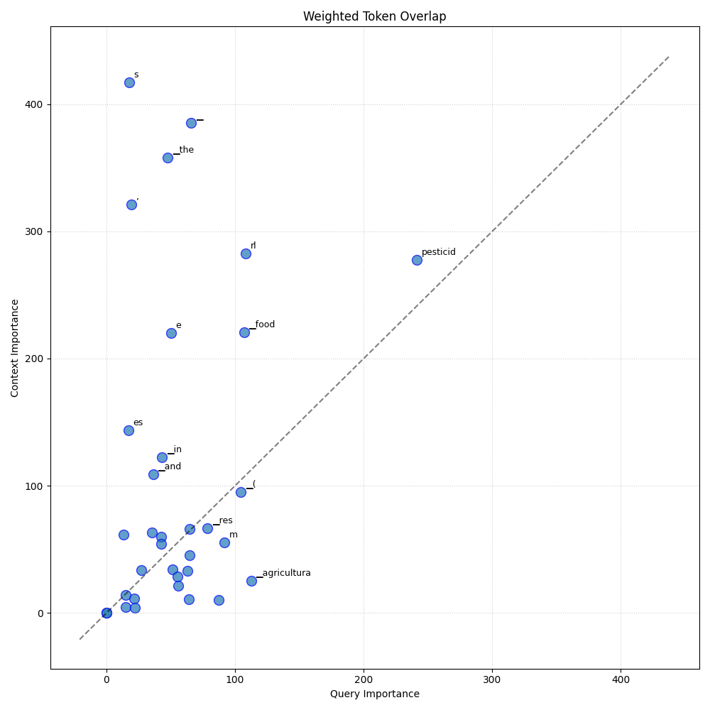

Analysis: query_57
Query: ▁query:▁What▁are▁the▁Maximum▁Residue▁Limits▁(MRL)▁for▁pesticides▁in▁various▁agricultural▁products,▁and▁how▁do▁they▁ensure▁food▁safety?
Document Relevance

Weighted Overlap

Token Comparison

Documents
Document 1 (Click to Expand)
▁The▁use▁of▁plant▁protection▁products▁during▁the▁production▁of▁fruit,▁vegetables▁and▁cereals▁can▁lead▁to▁the▁presence▁of▁residues▁in▁food▁and▁feed.▁Maximum▁residue▁levels▁(MRL)▁are▁set▁in▁the▁European▁legislation3▁in▁order▁to▁check▁the▁good▁use▁of▁plant▁protection▁products▁(use▁of▁authorised▁products▁according▁to▁their▁good▁agricultural▁practices)▁and▁to▁protect▁the▁consumers.▁Food▁or▁feed▁which▁do▁not▁comply▁with▁the▁MRL▁cannot▁be▁put▁on▁the▁market▁nor▁used.▁MRLs▁are▁not▁toxicological▁limits.▁An▁MRL▁exceeding▁content▁is▁a▁sign▁of▁incorrect▁use▁of▁a▁plant▁protection▁product▁but▁does▁not▁necessarily▁involve▁a▁risk▁for▁the▁health▁of▁consumers.▁More▁information▁regarding▁plant▁protection▁products▁authorized▁in▁Belgium▁is▁available▁on▁the▁website▁Fytoweb4.▁Information▁on▁MRLs▁can▁be▁found▁on▁the▁website▁of▁the▁European▁Commission5.▁The▁approach▁used▁by▁the▁Federal▁Agency▁for▁the▁Safety▁of▁the▁Food▁Chain▁(FASFC)▁for▁the▁control▁of▁pesticide▁residues▁is▁risk▁based.▁The▁programme▁has▁been▁drawn▁up▁following▁the▁general▁statistical▁approach▁developed▁within▁the▁FASFC▁(Maudoux▁et▁al.,▁2006).▁Several▁factors▁have▁been▁taken▁into▁account:▁the▁toxicity▁of▁the▁active▁substances,▁food▁consumption▁statistics,▁food▁commodities▁with▁a▁high▁residues/non-compliance▁rate▁in▁previous▁monitoring▁years,▁origin▁of▁food▁(domestic,▁EU▁or▁third▁country),▁RASFF▁notifications6▁and▁all▁other▁useful▁information.▁Specific▁attention▁is▁then▁paid▁to▁products▁with▁high▁risk▁of▁MRL▁non-compliances.▁Most▁of▁the▁groups▁of▁fruits▁and▁vegetables▁are▁included▁in▁the▁programme▁and▁a▁rotation▁programme▁has▁been▁applied▁for▁less▁important▁commodities.▁The▁coordinated▁control▁programme7▁of▁the▁European▁Commission▁and▁some▁targeted▁sampling,▁mainly▁targeted▁sampling▁at▁border▁controls▁3▁Regulation▁(EC)▁N°396/2005▁of▁the▁EU▁Parliament▁and▁the▁Council▁of▁23▁February▁2005▁on▁maximum▁residue▁levels▁of▁pesticides▁in▁or▁on▁food▁and▁feed▁of▁plant▁and▁animal▁origin▁*▁http://www.fytoweb.be▁*▁https://ec.europa.eu/food/plant/pesticides/max_residue_levels_en▁*▁https://webgate.ec.europa.eu/rasff-window/portal/▁*▁Commission▁Implementing▁Regulation▁(EU)▁2019/533▁concerning▁a▁coordinated▁multiannual▁control▁programme▁of▁the▁Union▁for▁2020,▁2021▁and▁2022▁to▁ensure▁compliance▁with▁maximum▁residue▁levels▁of▁pesticides▁and▁to▁assess▁the▁consumer▁exposure▁to▁pesticide▁residues▁in▁and▁on▁food▁of▁plant▁and▁animal▁origin.▁www.efsa.europa.eu/publications▁14
Document 2 (Click to Expand)
▁#▁Is▁eating▁fruit▁and▁vegetables▁dangerous▁because▁of▁too▁many▁pesticides?▁news▁Many▁people▁are▁concerned▁about▁the▁(health)▁risks▁of▁pesticide▁residues▁in▁fruit▁and▁vegetables.▁But▁is▁that▁concern▁justified?▁Standards▁for▁pesticides▁on▁fruit▁and▁vegetables▁Within▁the▁European▁Union,▁strict▁standards▁apply▁to▁the▁amount▁of▁pesticides▁that▁may▁be▁present▁in▁our▁food.▁A▁plant▁protection▁product▁may▁only▁be▁sold▁and▁used▁if▁it▁is▁permitted.▁Admission▁is▁possible▁after▁the▁risks▁have▁been▁assessed.▁It▁is▁investigated▁whether▁there▁will▁be▁no▁adverse▁environmental▁or▁health▁effects▁under▁normal▁use.▁•▁Maximum▁Residue▁Limit▁(MRL)▁The▁maximum▁residue▁limit▁(MRL)▁is▁a▁legally▁stipulated▁maximum▁amount▁of▁a▁pesticide▁that▁may▁be▁present▁in▁a▁food.▁They▁are▁generally▁well▁below▁the▁toxicological▁limit,▁both▁in▁the▁short▁and▁in▁the▁long▁term.▁There▁is▁a▁large▁safety▁margin▁in▁the▁MRL.▁The▁MRL▁is▁set▁in▁such▁a▁way▁that▁even▁'enthusiasts',▁the▁people▁who▁eat▁a▁lot▁of▁certain▁products,▁do▁not▁reach▁the▁acceptable▁daily▁intake▁(ADI).▁This▁means▁that▁if▁the▁MRL▁is▁exceeded▁in▁one▁product,▁most▁people▁will▁not▁exceed▁the▁ADI▁when▁eating▁the▁product.▁The▁following▁matters,▁among▁others,▁play▁a▁role▁in▁determining▁the▁MRL:▁•▁In▁which▁foods▁does▁the▁substance▁occur?▁•▁How▁much▁is▁in▁these▁foods▁and▁are▁there▁other▁products▁that▁contain▁much▁more▁or▁less?▁For▁example,▁a▁certain▁pesticide▁that▁is▁used▁on▁apples▁can▁also▁be▁used▁on▁other▁fruits.▁It▁can▁also▁occur▁in▁applesauce.▁Based▁on▁these▁data,▁the▁MRL▁for▁this▁pesticide▁can▁be▁set▁lower.▁This▁prevents▁people▁from▁ingesting▁too▁much▁residue▁of▁the▁pesticide▁in▁total.▁•▁How▁much▁of▁those▁products▁does▁the▁average▁consumer▁eat?▁And▁how▁much▁do▁vulnerable▁groups,▁such▁as▁children,▁the▁sick,▁the▁elderly▁or▁pregnant▁women▁eat?▁•▁How▁many▁of▁those▁products▁do▁enthusiasts▁eat▁on▁average▁per▁day?▁•▁How▁toxic▁is▁the▁substance?▁How▁much▁can▁a▁person▁take▁every▁day▁without▁any▁health▁effect?▁The▁evaluation▁of▁the▁MRL▁values▁is▁done▁by▁the▁European▁Food▁Safety▁Authority▁(EFSA).▁EFSA▁must▁ensure▁that▁pesticide▁residues▁in▁food▁are▁as▁low▁as▁possible▁and▁do▁not▁cause▁harm,▁especially▁to▁babies,▁children,▁pregnant▁women▁and▁vegetarians.▁EFSA▁also▁monitors▁the▁ban▁on▁pesticides▁that▁can▁accumulate▁in▁your▁body▁(such▁as▁DDT).▁The▁European▁MRLs▁for▁active▁substances▁in▁plant▁protection▁products▁can▁be▁found▁in▁the▁EU▁Pesticides▁Database▁(▁www.codexalimentarius.net/pestres/data/index.html▁).
Document 3 (Click to Expand)
▁#▁Towards▁more▁reliable▁measurements▁of▁pesticides▁in▁wheat▁Pesticides▁residues▁in▁food▁must▁be▁safe▁for▁consumers▁and▁as▁low▁as▁possible,▁and▁therefore▁EU▁laws▁EN▁•••▁set▁Maximum▁Residue▁Levels▁(MRLs)▁for▁each▁pesticide▁in▁each▁food▁product.▁A▁MRL▁is▁the▁highest▁level▁of▁a▁pesticide▁residue▁that▁is▁legally▁tolerated▁in▁food▁or▁animal▁feed.▁EU▁countries’▁official▁control▁laboratories▁regularly▁measure▁pesticide▁residue▁levels▁in▁food▁to▁ensure▁MRLs▁are▁respected.▁For▁non-compliant▁products▁enforcement▁action▁is▁taken▁by▁the▁national▁authorities.▁Measuring▁pesticide▁residues▁remains▁challenging▁though.▁Currently,▁more▁than▁300▁different▁agricultural▁products▁need▁to▁comply▁with▁MRLs▁for▁over▁800▁different▁pesticides.▁Laboratories▁have▁to▁ensure▁that▁their▁measurement▁methods▁can▁deliver▁accurate▁and▁precise▁results▁in▁all▁these▁cases.▁In▁order▁to▁achieve▁this,▁international▁standards▁require▁laboratories▁to▁use▁quality▁control▁tools▁such▁as▁Certified▁Reference▁Materials▁(CRMs),▁to▁check▁if▁their▁analytical▁results▁are▁accurate.▁The▁Joint▁Research▁Centre▁is▁a▁leading▁provider▁of▁CRMs▁worldwide▁and▁has▁just▁released▁a▁new▁CRM▁for▁pesticide▁residues▁in▁wheat▁(ERM-BC706).▁The▁new▁CRM▁is▁certified▁for▁the▁content▁of▁20▁of▁the▁most▁commonly▁used▁pesticides.▁This▁CRM▁will▁allow▁laboratories▁to▁validate▁their▁measurement▁methods▁according▁to▁a▁guideline▁provided▁by▁the▁European▁Commission's▁Directorate-eneral▁for▁Health▁and▁Food▁Safety.▁In▁this▁guideline,▁food▁commodities▁are▁grouped▁by▁their▁composition▁into▁ten▁major▁categories▁of▁their▁plant▁or▁animal▁origin,▁reflecting▁the▁different▁analytical▁challenges▁in▁method▁validation▁and▁quality▁control▁for▁different▁types▁of▁food.▁The▁new▁CRM▁ERM-BC706▁is▁representative▁for▁food▁with▁a▁high▁starch▁content▁(e.g.▁wheat,▁barley,▁maize,▁rye).▁It▁complements▁already▁existing▁CRMs▁for▁high▁water▁content▁vegetables▁(cucumber,▁ERM-BC403),▁high▁oil▁content▁(soy▁beans,▁ERM-BC700),▁eggs▁(ERM-BB125),▁milk▁and▁milk▁products▁(BCR-187▁and▁BCR-188)▁and▁fat▁from▁animal▁origin▁(ERM-BB430).▁Further▁details▁on▁the▁new▁CRM▁can▁be▁found▁in▁the▁certification▁report.▁##▁Background:▁CRMs▁allow▁laboratories▁to▁validate▁their▁measurement▁methods▁according▁to▁a▁guideline▁provided▁by▁the▁European▁Commission.▁In▁this▁guideline,▁food▁commodities▁are▁grouped▁by▁their▁composition▁into▁ten▁major▁categories▁of▁their▁plant▁or▁animal▁origin,▁reflecting▁the▁different▁analytical▁challenges▁in▁method▁validation▁and▁quality▁control▁for▁different▁types▁of▁food.▁##▁Sources
Document 4 (Click to Expand)
▁#▁Maximum▁Residue▁Level▁(MRL)▁Database▁##▁Use▁this▁database▁to▁find▁EU▁pesticide▁maximum▁residue▁levels▁for▁trade▁in▁or▁to▁the▁UK▁or▁other▁EU▁countries▁This▁Maximum▁Residue▁Level▁database▁provides▁comprehensive▁information▁on▁statutory▁MRLs▁applying▁to▁pesticides▁in▁food▁set▁under▁Regulation▁(EC)▁No▁396/2005.▁MRLs▁are▁limits▁on▁pesticide▁residues▁in▁food.▁They▁are▁the▁maximum▁residue▁levels▁likely▁to▁be▁left▁in▁food▁after▁pesticides▁are▁used▁in▁accordance▁with▁authorised▁instructions.▁##▁Change▁in▁the▁format▁of▁this▁database▁The▁data▁content▁remains▁the▁same▁as▁that▁captured▁previously,▁but▁some▁changes▁have▁been▁made▁to▁the▁way▁the▁data▁are▁displayed▁and▁the▁functionality▁of▁the▁search▁engine▁to▁create▁a▁more▁modern▁structure▁and▁improve▁the▁user▁experience.▁##▁Please▁read▁the▁guidance▁below▁before▁using▁this▁database▁Although▁the▁database▁describes▁legal▁provisions▁it▁has▁no▁legal▁status.▁MRLs▁and▁associated▁legal▁provisions▁are▁set▁under▁Regulation▁(EC)▁No▁396/2005▁and▁individual▁Commission▁implementing▁Regulations.▁The▁information▁in▁this▁database▁about▁the▁MRLs▁and▁provisions▁set▁under▁EU▁Regulations▁is▁correct▁to▁the▁best▁of▁our▁knowledge,▁but▁you▁are▁advised▁to▁refer▁to▁the▁text▁of▁the▁EU▁Regulations▁concerned▁for▁verification.▁If▁a▁substance▁comes▁within▁the▁definition▁of▁a▁plant▁protection▁product,▁but▁specific▁MRLs▁have▁not▁been▁included▁in▁Annexes▁II,▁III▁or▁V▁of▁Regulation▁396/2005,▁the▁default▁MRL▁of▁0.01▁mg/kg▁will▁apply,▁unless▁the▁substance▁is▁exempt▁from▁MRLs▁through▁listing▁in▁Annex▁IV:▁Annex▁IV▁-▁active▁substances▁exempt▁from▁MRLs.▁All▁the▁content▁of▁the▁database▁entries▁should▁be▁scrutinised,▁including▁links▁to▁details▁and▁footnote▁entries.▁These▁may▁contain▁important▁information,▁including▁the▁following:▁*▁the▁residue▁definitions▁that▁apply▁when▁testing▁foods▁for▁compliance▁with▁MRLs,▁including▁where▁different▁residue▁definitions▁apply▁to▁specific▁commodities▁*▁the▁dates▁when▁specific▁MRLs▁come▁into▁force;▁*▁any▁transitional▁provisions▁that▁apply▁to▁the▁marketing▁of▁commodities▁or▁products▁treated▁before▁the▁coming▁in▁to▁force▁of▁a▁new▁MRL;▁*▁any▁requirement▁to▁submit▁supplementary▁information▁established▁as▁a▁condition▁of▁setting▁an▁MRL;▁*▁historical▁details▁of▁how▁MRLs▁have▁changed▁over▁time▁##▁The▁Annexes▁to▁Regulation▁(EC)▁No▁396/2005▁*▁Annex▁I▁contain▁a▁list▁of▁products,▁product▁groups▁and▁(where▁appropriate)▁parts▁of▁products▁for▁which▁MRLs▁are▁set.▁A▁full▁list▁of▁these▁can▁be▁found▁here:▁Part▁1▁-▁set▁by▁Regulation▁2018/62
Document 5 (Click to Expand)
▁#▁Five▁Misconceptions▁That▁Can▁Disrupt▁Trade▁Flows▁##▁Five▁Misconceptions▁That▁Can▁Disrupt▁Trade▁Flows▁The▁international▁trade▁of▁agricultural▁products▁is▁the▁lifeblood▁of▁the▁global▁economy.▁A▁complex▁web▁of▁tech▁providers▁and▁seed▁companies,▁producers,▁transporters▁and▁distributors▁interact▁to▁maintain▁the▁flow▁of▁food▁and▁feed▁around▁the▁world.▁Maintaining▁this▁supply▁can▁be▁difficult▁in▁an▁international▁patchwork▁of▁jurisdictions▁that▁is▁subject▁to▁potential▁change▁based▁on▁political▁decision▁making.▁Science-based▁policymaking▁is▁at▁the▁heart▁of▁reliable▁and▁transparent▁trade▁of▁ag▁products.▁Misinformation▁or▁misconceptions▁around▁key▁agricultural▁issues▁such▁as▁food▁safety▁and▁use▁of▁GMOs▁can▁impact▁significantly▁on▁trade▁flows.▁Here▁we▁tackle▁five▁misconceptions▁that▁can▁have▁a▁disrupting▁influence▁on▁international▁trade.▁##▁1.▁“Maximum▁Residue▁Levels▁(MRLs)▁are▁food▁safety▁standards.”▁Pesticides▁perform▁a▁vital▁role▁in▁protecting▁crops▁and▁reducing▁the▁burden▁on▁farmers.▁Residues▁are▁leftovers▁from▁the▁intentional▁use▁of▁a▁substance,▁e.g.▁from▁pesticide▁use▁in▁agriculture.▁Usually▁residues▁occur▁in▁very▁low▁(trace)▁amounts.▁Consistent▁use▁of▁a▁pesticide▁on▁a▁crop▁results▁in▁similar▁residue▁levels.▁This▁fact▁allows▁for▁the▁definition▁of▁a▁maximum▁residue▁level▁which▁should▁not▁be▁exceeded▁if▁the▁pesticide▁is▁used▁as▁intended.▁So,▁MRLs▁represent▁a▁check▁on▁whether▁pesticides▁have▁been▁used▁in▁the▁correct▁manner.▁When▁pesticides▁are▁used▁correctly,▁the▁residues▁will▁be▁below▁the▁MRL▁and▁the▁respective▁food▁can▁be▁placed▁on▁the▁market.▁If▁residues▁are▁above▁the▁MRL,▁pesticides▁may▁not▁have▁been▁used▁correctly▁and▁the▁respective▁food▁cannot▁be▁sold.▁Thus,▁MRLs▁are▁commercial▁standards▁and▁enable▁decision▁making▁on▁which▁foods▁can▁reach▁the▁consumer.▁Despite▁forming▁a▁crucial▁component▁in▁the▁trade▁of▁agricultural▁products,▁MRLs▁are▁not▁harmonised▁globally.▁This▁presents▁challenges▁for▁producers▁that▁must▁instead▁meet▁potentially▁differing▁standards▁for▁both▁importing▁and▁exporting▁countries.▁This▁makes▁it▁important▁to▁ensure▁that▁there▁is▁a▁stable▁regulatory▁framework▁as▁changes▁to▁MRLs▁can▁leave▁farmers▁unable▁to▁trade▁their▁produce,▁disrupting▁the▁supply▁chain▁while▁providing▁no▁tangible▁benefit▁to▁consumers.▁##▁MISCONCEPTION▁“Maximum▁Residue▁Levels▁(MRLs)▁on▁pesticides▁are▁food▁standards.”▁##▁TRUTH▁MRLs▁help▁farmers▁to▁trade▁and▁sell▁their▁correctly▁produced▁food.▁##▁2.▁“The▁need▁for▁LLP▁policies▁shows▁that▁international▁food▁safety▁protocols▁are▁inadequate.”
Document 6 (Click to Expand)
▁#▁Canada▁Reevaluating▁Maximum▁Levels▁for▁Pesticide▁Residues▁in▁Food▁Health▁Canada▁has▁restarted▁a▁science-based▁evaluation▁to▁determine▁acceptable▁increases▁to▁maximum▁residue▁limits▁(MRLs)▁for▁pesticides▁in▁foods.▁MRLs▁are▁legal▁and▁enforceable▁limits▁set▁for▁the▁different▁combinations▁of▁pesticides▁and▁foods▁or▁crops.▁As▁part▁of▁the▁MRL▁setting▁process▁for▁a▁pesticide,▁Health▁Canada▁scientists▁evaluate▁the▁toxicity▁of▁a▁pesticide▁and▁conduct▁a▁risk▁assessment▁that▁looks▁at▁the▁diets▁of▁people▁in▁Canada,▁including▁vulnerable▁populations.▁In▁2022,▁Health▁Canada▁published▁a▁Notice▁of▁Intent,▁which▁began▁consultations▁on▁proposed▁amendments▁to▁the▁Pest▁Control▁Products▁Regulations.▁The▁present▁proposed▁amendments▁are▁a▁result▁of▁the▁2022▁consultations▁on▁the▁Pest▁Control▁Products▁Act.▁Following▁consultation▁with▁stakeholders▁to▁better▁understand▁Canadians’▁expectations▁about▁the▁pesticide▁regulatory▁review▁process▁and▁its▁transparency,▁Health▁Canada▁decided▁to▁restart▁the▁science-based▁process▁of▁evaluating▁acceptable▁increases▁to▁pesticide▁residue▁limits,▁in▁line▁with▁international▁guidelines.▁The▁work▁is▁part▁of▁an▁initiative▁to▁develop▁a▁sustainable▁approach▁to▁pesticide▁management▁while▁giving▁farmers▁the▁tools▁they▁need▁to▁keep▁providing▁reliable▁access▁to▁safe▁and▁nutritious▁food.